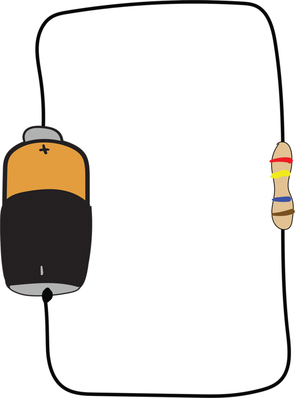
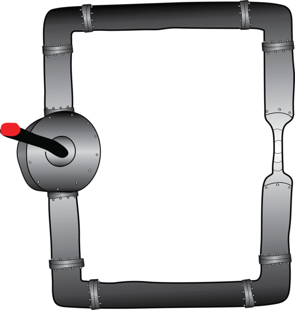
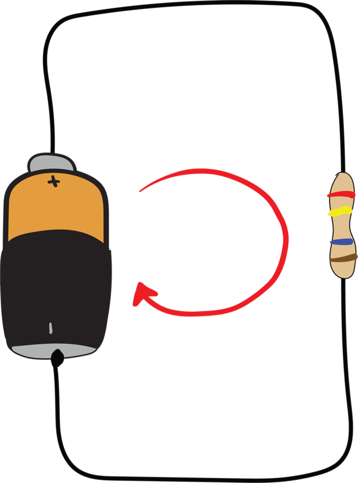
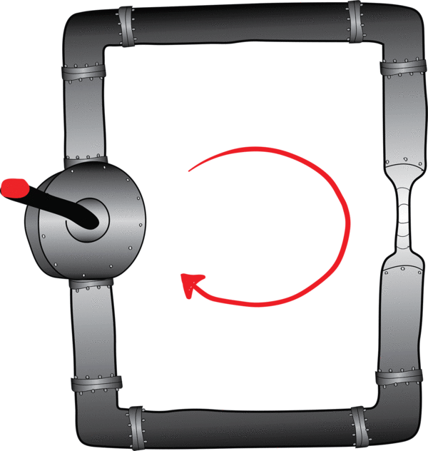

In our concept earlier in this guide, we talked about three common measurements used in electrical circuits — voltage, current and resistance. These three things aren't just measurements; they actually define how, when and to what extent electric charge flows, and by controlling these three parts of a circuit, we can harness the power that electricity provides. While we can't actually see voltage, current or resistance, there are some analogies we can use (based on the water analogy) to help understand each of these concepts and how they interact with each other.
Let's take a look at a new circuit and an analogous water loop:
|

Battery Resistor |

Pump Narrow Pipe |
Similar to our previous water analogy example, the battery (or pump) forces charged particles (or water molecules) around a closed circuit (or closed loop). But, in this example, we've added a narrowing to the pipe so we can discuss concepts relating to the circuit. Here is are the analogous pieces of each of the images above:
|
ELECTRICAL CIRCUIT |
WATER CIRCUIT |
|---|---|
|
Voltage |
Water Pressure |
|
Current |
Water Flow |
|
Resistance |
Narrowed Pipe |
Now let's talk about each of these components in more detail...
Voltage is electrical force and it's measured as the difference in the amount of charge from one point in an electrical circuit to another. An important electrical concept is that electrical current will typically only flow between two points that have a difference in charge (a voltage). Specifically, current will flow from a point of higher charge to a point of lower charge. If there is the same amount of charge at two points in a circuit, no electric charge will flow.
|
Higher Voltage Lower Voltage |
Higher Pressure Lower Pressure |
Using our water analogy, voltage is analogous to the amount of pressure (basically, the force) that is pushing water through the pipe. In a circuit of pipes where water is being pushed, water enters the pump at a low pressure and is forced out of the pump at a high pressure. It is this pressure difference that makes the water flow. Likewise, in an electric circuit, a power source (like a battery) takes in charge at a low voltage and pushes it out at a high voltage. It is this difference in voltage on the opposite sides of the power source that makes the charged particles flow.
One more thing to mention — voltage is almost always talked about as a measurement between two points. That is, voltage isn't an absolute value; it is relative to other points in a circuit. Think of it this way — we can say that it is 60 degrees outside (that's an absolute value), but we can also say that it's 20 degrees warmer inside than outside (though it's not clear what the exact inside and outside temperatures are). With voltage, we're always measuring relative to some other point in the circuit.
For example, when we talk about the voltage of a battery, we're actually measuring the difference in charge between the positive side of the battery and the negative side. Sometimes we talk about a voltage at a single point — in that case, it's generally assumed that we are measuring the voltage between that point in the circuit and ground, which is the lowest point of charge in a circuit.
Voltage is measured in "volts," which are named after the Italian physicist Alessandro Volta, who was one of the first inventors of a rudimentary battery around 1800.
Current is the flow of electric charge through a circuit and it's measured as the amount of charged particles moving through a point in the circuit in a given period of time. Using our water analogy, current is analogous to the volume of water actually flowing through the pipe.
|

Current |

Water Flow |
It's important to note that in our simple circuit example above, the current is exactly the same at every point in the circuit. That is, at any point in the circuit, the same number of charged particles are passing that point in a given period of time. This is true for all the components of the circuit — current will move through the battery, the wires, and the resistor all at the same rate.
If you think about the water analogy, you might realize that this must be true. If there was any segment of the circuit where there was more water continuously going into that segment than going out, then the pipe would balloon up at that point, and maybe even burst. But that doesn't happen — current flows around the entire circuit all together, in lock step.
Current is measured in "amperes" ("amps," for short), which are named after the French physicist André-Marie Ampère, who researched electrical current and other phenomenon in the 1800s.
Benjamin Franklin is generally credited with defining the "positive" and "negative" values of charge (which come from protons and electrons within atoms). Unfortunately, he did so more than 200 years before the discovery of atoms, so he didn't know what charge physically was; in fact, he referred to it as "electrical fluid."
It turns out, you can understand many of the concepts of electricity without knowing the details of the physical particles that carry charge. In fact, you can think of electrical current as positive charges that flow in one direction, or you can think of it as negative charges that flow the opposite direction — from the outside, everything would look the same.
Franklin made the arbitrary choice to define current as the flow of positive charges from a positive voltage to a negative voltage. However, we now know that the particles that actually move are negatively charged electrons, and they flow from negative to positive voltage. Today, we still draw current as moving from higher voltage (the positive terminal of a battery) to lower voltage (the negative terminal of a battery), but if you could see into a wire, you'd actually see that the electrons are moving in the opposite direction. We call the current flow from higher voltage to lower voltage conventional current.
When you hear an engineer, teacher or electrician say "current," they most likely mean conventional current — not the actual flow of electrons.
Resistance is what reduces the flow of current in a circuit. Using our water analogy, if a water pipe is constricted (narrowed), then less water can flow through it using the same amount of force. If you've ever played with a garden hose, this concept is probably familiar to you. If you pinch the hose, less water comes out. If you pinch the hose hard enough, no water comes out. You can imagine this in the water analogy as shown below:
No Resistance
A Little Resistance
A Lot of Resistance
As you might imagine from the water analogy, the more you increase resistance in an electrical circuit, the more you reduce the current moving through the circuit. All components in an electrical circuit will have some resistance — even the wires. But, some components have more resistance than others, and some components (resistors) are designed specifically for the purpose of creating resistance in a circuit. They are generally used to reduce current through part or all of the circuit.
While introducing a resistor into a closed circuit will reduce current throughout the entire circuit (remember that current is going to be the same at every point in the circuit), a resistor will have a different voltage on one side of it than on the other. The voltage at the side of the resistor nearest the positive side of the power source will have a higher voltage than the side of the resistor nearest the negative (ground) side of the power source.
This difference in voltage is called the voltage drop across the resistor. This is similar in the water analogy — when water is forced through a narrow pipe, the water gets "squished" together at the beginning of the narrow portion of pipe (pressure is higher) and is "unsquished" at the end of that portion of pipe (pressure is lower).
Resistance is measured in "ohms," which are named after physicist Georg Simon Ohm, who studied electrical resistance in the 1800s.
You can't tell how much resistance a resistor has by the size of it. One resistor that is exactly the same size and shape as another can have a million or more times as much resistance. Because of this, some resistors are labeled with a color code — a set of colored bands that indicate what the value of the resistance, in ohms. The color code matches a color with each of the digits 0-9:
|
COLOR |
DIGIT |
|---|---|
|
BLACK |
0 |
|
BROWN |
1 |
|
RED |
2 |
|
ORANGE |
3 |
|
YELLOW |
4 |
|
GREEN |
5 |
|
BLUE |
6 |
|
VIOLET |
7 |
|
GRAY |
8 |
|
WHITE |
9 |
As shown above, the first 2 bands of color are the first two digits of the resistance. The third band is a multiplier — it is the number of zeros to add to the end of the number.
For example, for the resistor shown above, the color bands are brown, black, and red, which corresponds to the numbers 1, 0, and 2. Therefore, the resistance is "10" followed by 2 zeros, which equates to 1000 ohms.
Now that you have the basic definitions of voltage, current and resistance, you're ready for one of the fundamental equations in circuit theory, Ohm's Law:
Voltage = Current x Resistance
This formula basically says that, within any part of a circuit, voltage, current and resistance are all interrelated — changing one or two of them, will impact the others. Specifically:
If you keep the amount of resistance the same, increasing/decreasing the voltage by some percentage will increase/decrease the current by the same percentage. This makes sense when you think about the water analogy with a constricted pipe — if you increase the water pressure some percentage, the water flow will increase by the same percentage. For example, if you pump water twice as hard through a constricted water pipe, twice as much water will flow.
If you keep the amount of voltage the same, increasing/decreasing the resistance by some percentage will decrease/increase the current by the same percentage. This makes sense when you think about the water analogy again — if you pump the water with a constant amount of force, it will flow through a bigger pipe (less resistance) faster than it will flow through a smaller pipe (more resistance). In fact, water will flow twice as fast through a pipe that is twice as big if the pump is applying the same amount of force.
In our next project, we'll be modifying some simple circuits to test these properties of Ohm's Law.